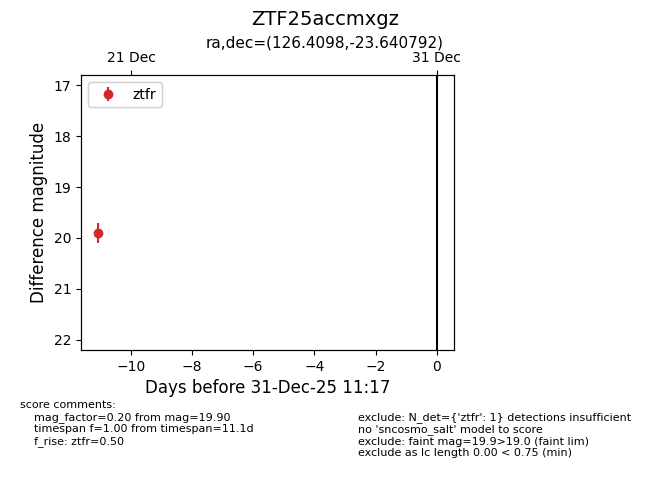
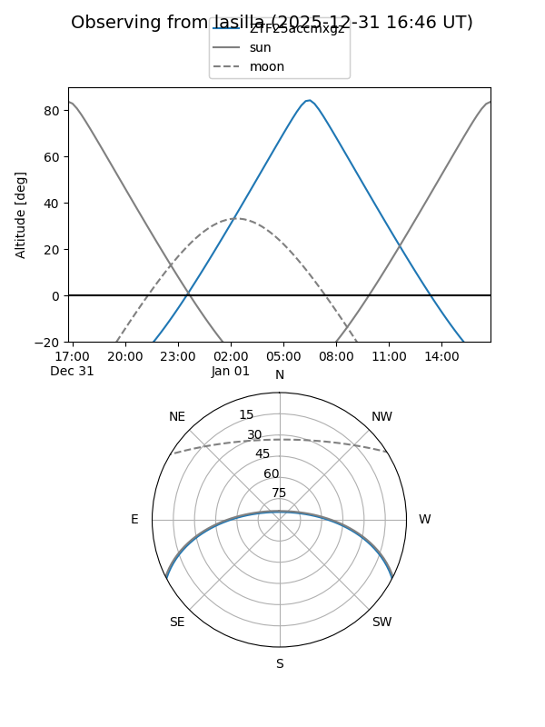
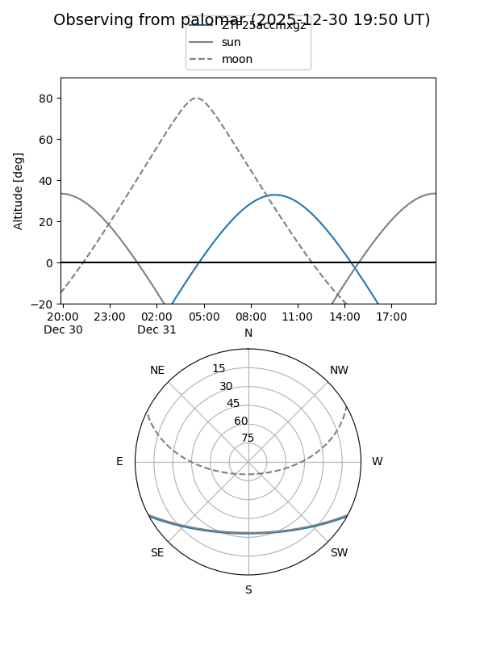

ZTF25accmxgz
Target ZTF25accmxgz at 2025-12-20 10:55
Aliases and brokers:
FINK: fink-portal.org/ZTF25accmxgz
Lasair: lasair-ztf.lsst.ac.uk/objects/ZTF25accmxgz
ALeRCE: alerce.online/object/ZTF25accmxgz
alt names
ZTF25accmxgz (ztf,fink_ztf)
Coordinates:
equatorial (ra, dec) = 126.4098,-23.64079
equatorial (HMS+DMS) = 08:25:38.36,-23:38:26.85
galactic (l, b) = (244.8846,+8.21605)
Flags:
Photometry:
last ztfr=19.90
1 ztfr detections
Lightcurve

Visibility


Additional plots